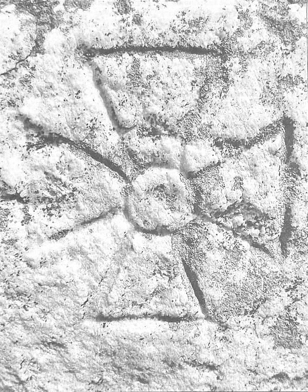

Blaga spunea, în Spațiul mioritic, că românii au boicotat istoria aproape două milenii. Dar, cel puțin, s-au refugiat în SFINȚENIE - în bisericuțele de lemn și în pădurile-biserici, pădurile-temple. În CREDINȚĂ. În ORTODOXĂ CREDINȚĂ – adică Dreaptă Credință… încă înainte de 1054.
Azi, însă, românii nu boicotează doar istoria, ci-și boicotează însăși ființa profundă – SUFLETUL/SPIRITUL/DUHUL ORTODOX. Își boicotează LIBERTATEA, pe care Dumnezeu a dat-o OMULUI, încă din Paradis, ca har! Iar când a căzut din Paradis - LIBERTATEA DE A RESPINGE PĂCATUL, DE A REFUZA SCLAVIA SATANEI!!!
…Ieșiți din pădurile sfinte, părăsind chiar satele cosmice, se-nghesuie, azi, în turme inconștiente, abrutizate, în block-hausurile monstruoase ale orașelor (strivitoare de conștiință, de sine și de Dumnezeu-din-Suflet). Și, apoi, mulți, tot mai mulți, pleacă „în neagra străinătate”. În APUS/AMURG!!!
Atitudini românești actuale dominante: țigănirea atotpângăritoare, egoismul, individualismul (sporite, aparent paradoxal, de trecerea prin tunelul comunist), inconștiența și iresponsabilitatea crase - NU fatalism mioritic! (…cine spune asta, NU MAI ȘTIE SĂ CITEASCĂ/TRĂIASCĂ MIORIȚA… - Miorița-Epopee a Eliberării spre… „păsărele mii și stele făclii”/Revenirea în Paradis/Recuperarea Paradisului…) - ci, de-a dreptul nesimțire, instinctualitate necenzurată, brutalitate, violență absurdă.
…În schimb (?!): „libertatea” de a ucide pruncii din pântecul mamei, „libertatea” de a fi sodomist/homosexual, „libertatea” de a minți, „libertatea” de a avea „puncte de vedere”, „DEMOCRATIC” (?!), asupra… ADEVĂRULUI UNIC!!! - … „libertatea” de a huli, „libertatea” de a scuipa și de a mitralia ICOANELE (…cum spunea, într-o scrisoare din Spania războiului civil, în 1936, martirul Ionel Moța…)!!!
…Sau: filistinism, fariseism, intelectualism histrionic și steril, snobism îndobitocitor. Sute de mii de ființe, mai curând violente și viclene, decât înfrânte de evlavie, se înghesuie la Sfintele Moaște, din biserici și mânăstiri, așteptând minuni imperioase, imediate, „la minut”, cu o divinitate concepută ca un „tătuc” ramolit, bun de înșelat și de stors… fiare în haine de om, care-și fură unii altora Libertatea-ca-Har, Libertatea față de Satana și ispitele Satanei (…auzim, zilele astea, că niște indivizi au furat chiar moaștele Sfântului Nectarie, de la Mânăstirea Radu-Vodă! – oare care o mai fi omenia omului, care mai este respectul lui, pentru oameni, pentru Libertatea Duhului lor, prin Omul-Sfânt?! …că de „frica de Dumnezeu”, ce să mai zicem?! – …Îl negociem în euro, la piață/obor, pe El!!! – parcă nici Iuda nu ajunsese chiar la o așa grozavă performanță…).
…Nu Credință, nu Libertatea față de păcat - ci, de prea multe ori, doar superstiție. Din păcate, până și preoții/„păstorii turmei” s-au prea lumit, prea forfotesc după propriile necazuri ori câștiguri. În loc să devină „lumini călăuzitoare”, „modele stimulatoare”, întru fapta de Duh a oamenilor/creștinilor parohiei, eparhiei etc.
…Multă stridență, descurajantă superficialitate. Tineri și bătrâni au înnebunit în aceeași catalepsie spirituală. „Merge și așa” din economie – se transferă și se transformă în „merge și așa”, din religie. Merge oricum, căci, majoritatea sunt adepții lui „dacă mâine crăpi, măcar azi îngăduie-ți orice”, sau: „măcar să crăpi sătul”, sau: „apucă tu, ca să n-apuce altul/că oricum apucă altul…”.
Mai sunt și necăjiți interiorizați, chiar și unii practicanți riguroși și profunzi, ai creștinismului ortodox. Dar tare puțini…
Atunci, pentru cine scriu ziarele, când nu scriu despre violuri, crime, sexualitate exacerbată/exhibată nerușinat etc.? Ce efect au, asupra românului, ziarele de „atitudine românească”, creștin-ortodoxă, naționaliste, precum Permanențe, Credința ortodoxă, Scara, (a fost și Crezul nostru…), Gazeta de Vest, Sfarmă Piatră etc. – sau publicațiile electronice ale ARP-Asociația Română pentru Patrimoniu – ale regretatului dr. Artur Silvestri? Da, ce efect, când majoritatea populației românești nici nu mai știe ce-i acela costum național românesc, ce-i mândrie națională, patrie, Neam etc. - ci a intrat, cu ambele picioare, în civilizația globalizantă Coca-Cola, a discotecilor, a barurilor, McDonald’s-urilor, a curentelor sataniste rock, emo etc., a blugilor și gecilor (zdrențuite, neapărat!), a cerceilor/belciugelor, în toate zonele corpului… - totul conducând la americanizarea/satanizarea, cretinizantă, a limbii, a Logos-ului Sacru…?!
…Pe oamenii obișnuiți, „liberi”, din România… „liberă”, nu-i prea vezi cu cartea în mână, nici măcar cu ziarul în mână, înafară de Pro-Sport și Gazeta Sporturilor… - ci aleargă, de zor, după afaceri „pe picior”, aranjamente dintre cele mai pasagere și extravagante, găinării mizerabile etc. Se lamentează steril, cam într-aiurea, ca bocitoarele tocmite pe bani puțini, despre cât de rău e în țară, înjură oleacă guvernul Boc și pe Băsescu (unii îl chiar laudă/admiră…) – apoi, ca și cum și-ar fi împlinit datoria de conștiință, uită într-o clipă totul și se azvârl înapoi în oceanul fleacurilor cotidiene, vieții de „pășune socială” – de fapt, în zona de protecție, de supraviețuire strict biologică. Sărăcia, doar, să fie de vină, oare, pentru atitudinea de rumegătoare, de veșnici căutători de hrană, pentru supraviețuirea „în clipă” a românilor? Libertatea, pentru ei… EA NU EXISTĂ! – …nici întru concept, darămite în realitate!
Știți, doar, ce spunea Pytagoras, în Legile morale și politice: „POPORULUI CARE SE PLÂNGE DE SĂRĂCIE, DĂ-I PÂINE, ȘI NU LIBERTATE”…
…Dar și „ajunșii”, bogătașii (de obicei, secături morale, „rechini de baltă”, foști „slujnicari”…) tot indiferenți la spiritualitate sunt. Sau e o deficiență mai complexă, un handicap spiritual care se adâncește? Demnitate, onoare, curăție sufletească… – unde-s? Ce mai înseamnă, în acest veac al hipersexualizării perverse a lumii, al instinctualizării de grotă a societății umane? Obscen, grosolan, trivial=NORMAL, DE „BON TON”… „MARFĂ”/„NAȘPA”!!! Au dispărut elitele (s-ar zice, pentru o privire superficială…): există, oare, ele, elitele, într-o imergență mistică – sau s-a intrat într-o prelungită pauză spirituală?
Există câteva sute, poate mii, hai să umflăm la zeci de mii… – de cititori ai revistelor și ziarelor/publicațiilor naționaliste, ai problemelor care țin de Ființa Neamului. Dar eficiența socială a discuțiilor lor pe marginea ziarului sau articolului cutare, reflectarea atitudinal-socială, drept consecință a lecturării segmentului mass-media problematizat, este ZERO. Sau foarte apropiată de ZERO. Pretinși neo-legionari (ca și cum legionarismul arhanghelic n-ar fi o stare perenă… - legionari din Legiunile Îngerești ale Cerului, coborâte pe pământ, o vreme… - „legionari au fost VOIEVOZII Evului Mediu” – cf. Profetism românesc, Memorii, de Mircea Eliade) - fără nicio tranziție, după articolul discutat cu tine, îți solicită o afacere (de „partid” sau nu…), o sumă de bani, toarnă bancuri nesărate etc. Se întorc mereu, iar, obsesiv… - la „pășunea socială”. La senina stare de corupție și coruptibilitate (materială, moral-spirituală…), atât de firească și naturală, ca respirația… O imbecilizare națională, „calată” total pe globalismul internaționalist Masonic. Ceea ce îl făcea pe un țar rus să afirme că „A FI ROMÂN… e o profesie”… Între timp, globalismul a avansat…
Libertatea autentică – NU! – dimpotrivă…!
…Să ne amintim că și Țuțea, după ce spusese așa de frumos despre faptul că poporul român „i-a făcut onoarea” ca el, Țuțea, să facă pușcărie pentru acest popor – pe la sfârșitul vieții, probozea (egal!) și poporul, și prostia lui proprie, de a se preda martiriului…
…Ce-i cu acest popor? Ce-i de făcut pentru poporul românesc, care a intrat într-un neo-fanariotism fără fanarioți – mult mai degradant (moral-spiritual) decât fanariotismul cu fanarioți?
Mai au rost scriitorii de bună-credință, ortodocși, scriitorii însângerați de neliniști, îndurerați de durerile pe care Neamul Metafizic le suportă de la inertul neam fizic, istoric? Mai au rost conștiințele scriitoricești? Între atâtea rânjete cinice, printre atâția scuipați scârboși și nedrepți?! Cum trebuie să scrie el, pentru a nu cădea în trivial, dar nici în ridicol – și a atrage, totuși, atenția, a deștepta, pentru o clipă sau un ceas, măcar… - acest foarte ciudat popor, sărac și corupt, cu pretenții de spiritualitate ortodoxă, dar atât de senin tranzacționist?!
O variantă de soluționare, în acest deșert al non-comunicării, al surzilor și orbilor – ar fi să se ia modelul reclamelor negustorești: insistența obsesivă, cretină și cretinizantă, pe-o imagine, pe-o senzație oarecare, primitivă. Dar asta n-ar trezi, în niciun caz, sufletul profund, ci doar senzorialul superficial. Și nu acesta este scopul „atitudinii românești”… nu crearea de animale curioase, sau fanatizate inconștient, subliminal, tranzitoriu – ci crearea stării eroice, re-trezirea sublimului spiritual. „Învierea Neamului”, spune Codreanu…
Aproape că devenim ridicoli: ce EROISM - care LIBERTATE - în economia de piață, de unde SUBLIM – printre tarabe?
Atunci cum? Să lăsăm acest neam să se afunde, tot mai adânc, în animalitatea somnului spiritual? În contra vizionarismului lui Andrei Mureșanu, a lui EMINESCU? Probabil că, dacă acest neam, peste 50-100-1000 de ani, va fi trezit, printr-o minune dumnezeiască (DELOC RARĂ LA ROMÂNI!), noi, puținii, câți mai conștientizăm tragedia actualei decăderi spirituale, agresiunea forțelor paralizante, malefice, dezlănțuite de planurile iudeo-masonice – vom fi blestemați (de acei „urmași ai urmașilor”…), pentru incapacitatea moral-spirituală, nesimțirea, pasivitatea etc. de care am dat dovadă, trădând „linia Neamului”, Misiunea de Luptători Metafizici în Legiunea Arhanghelului Duhului-MIKÄEL – care misiune este aceea de a crea elite, pentru realizarea misiunii hristice a Neamului: Învierea. Care va surveni prin teandrie: sinergie a efortului Duhului uman, cu Harul Pogorât al Sfintei Lucrări Dumnezeiești.
Și atunci? Atunci, A SCRIE CU PROPRIUL NOSTRU SÂNGE. LIBERTATE/ELIBERARE DE RĂU, PRIN MARTIRIU. Asta e Misiunea. De fiecare dată în istoria lui, acest ciudat, mistic Neam Românesc (cu rădăcini de sacralitate incontestabilă) a avut nevoie de MARTIRI și PROFEȚI, de șocuri „electrice”, care să-l trezească din aparenta, istorica letargie, măcar o clipă la 100 de ani. Și acești martiri și profeți au existat, au fost „livrați” prompt de Dumnezeu și de Soarta Mistică a Neamului, de MISIUNEA MISTICĂ A NEAMULUI ORTODOXIEI – și ei s-au urcat, cu fruntea sus, încruntați ori senini, după cum cerea momentul, pe eșafodul avid de sângele lor: domnitorii Evului Mediu (Mircea, Ștefan, Țepeș, Mihai, Brâncoveanu), țărani, mici boieri străluminați de Sfântul Duh și intelectuali vizionari (Horea și Cloșca, „Domnul” Tudor, Avram Iancu), trimișii Lui Dumnezeu, sub Zodia Mihaelică a Pământului (EMINESCU și Codreanu). Sângele lor, țâșnit din VÂRFUL GOLGOTEI NEAMULUI ROMÂNESC ORTODOX, a trezit, de fiecare dată, pentru o clipă ori un veac, uriașul adormit, CONȘTIINȚA REGALĂ, CELESTĂ, a plebeului colos românesc, amorțit în lut.
A TREZIT, ÎN FIARĂ – OMUL! Deci, și Harul Libertății, ca SETE, ca SINGURĂ FORMĂ/ȘANSĂ DE TRĂIRE A LUI DUMNEZEU!!! Neamul Românesc se dovedește cel mai lacom de sângele martiric și profetic (eliberator de Satana Istoriei jalnice, penibile, umilitoare…!!!), dintre toate neamurile pământului, un adevărat „vampir” – dar, probabil tocmai acesta a fost (vezi neamul evreu, din Vechiul Testament) și este semn de NEAM ALES. Și, în definitiv, acesta este Neamul nostru, altul n-avem și avem certitudinea că merită, că originea lui e întemeiată pe GRĂDINA MAICII DOMNULUI, iar viitorul lui arde întru NOUL IERUSALIM.
ELIBERAREA DE RĂU A NEAMULUI – pentru a re-deveni acea entitate sacră, decisă de Dumnezeu: Neamul Metafizic, de peste veac…! A-l scoate pe El, Neamul, din orbire, din poticnire… din rătăcirea prin iadul istoriei sângerând de nefericire și amărăciune…
…Dar, întâi, să învățăm să ne facem Rugăciunea, către Dumnezeu întâi, către Neam apoi… - pentru a binemerita de la Cer și Pământ, autoritatea morală, ONOAREA de a fi luați în seamă ca MARTIRI, pentru că nu oricine moare, moare la vedere, moare pe GOLGOTA! Pentru a se elibera de păcat!
Deci: LIBERTATEA PRIN MARTIRIU!!! A se elibera de ispita satanică (noian!), prin Sângele Martiric, autosacrifical, hristic.
…A exista în piscul Neamului, adică. Morții din văi sunt uitați, de parcă nici n-ar fi fost – eventual, sunt pomeniți pasager, în pomelnice – sau, cel mult, pe pereți de mausoleu… (căci românii n-au părăsit/irosit nimic din cultul morților/stră-moșilor!).
Și nici martirii și profeții aleși și primiți în Lucrarea Domnului să nu se aștepte la „audiență” („rating”…) și adorație imediată, din partea oamenilor neamului istoric – ci, cel mult, la veșnică neuitare, dobândită, uneori, destul de tardiv… Așa e blestemat Neamul acesta sau așa e formulată, de transcendență, condiția martirului și profetului, pentru Neamul Mistic al Românilor: să te sacrifici TOTAL, necondiționat, fără s-aștepți recunoaștere, recunoștință, memorie… Decât dacă, peste firea și conștiința ta, „ȚI-E DAT”, de către o zonă absolut transcendentă.

Dar martiriul presupune o cauză înaltă.
Ce cauză înaltă a mai rămas în acest talcioc balcanic-românesc, pentru care să merite să te jertfești? Dincolo de aparența talciocului este KOGAIONUL tracic-zalmoxian (Sfântul Apostol Andrei a avut cea mai ușoară misiune de creștinare, dintre toți apostolii lui Hristos, la geto-dacii zalmoxieni - pentru că, deja, Hristos-Dumnezeu Își trimisese, în Dacia, Vestirile Sale-Umbre – pe Orfeu și Zalmoxis – pentru a nu se speria și uimi cu neîncredere, omenirea, de Sfânta Taină a Învierii…), este GRĂDINA MAICII DOMNULUI; rămâne veșnic valabilă misiunea sacră a Neamului (cu condiția să n-o refuzăm, evident… cum au făcut-o răstignitorii Lui…), întru cea mai profundă și eternă atitudine creștină: ÎNVIEREA SPIRITUALĂ A NEAMULUI ROMÂNESC ORTODOX. N-aveți grijă, viitori martiri ai românilor, această misiune nu fuge nicăieri și niciodată, până la Judecata de Apoi a Neamurilor. Deci, NU VĂ VA LIPSI NICIODATĂ ȚELUL, Cauza, Misiunea Sacră, peste seamă de înaltă: doar tu, martirule, încă anonim și încă mut profet, să fii destul de pregătit pentru ceasul când vei fi ridicat de Dumnezeu la RANGUL GOLGOTIC, rangul Sfântului Martiriu pentru Trezirea-Învierea (o clipă, un veac, o veșnicie) a Neamului. Martir pentru ADEVĂRUL/ELIBERAREA DE PĂCAT A NEAMULUI. Să ne câștigăm onoarea perspectivei divine a Morții, onoarea piscului cu Cruce al Golgotei. „Mulți chemați, puțini aleși”. De fapt, unul singur este MARTIRUL-MUNTELE DE FLACĂRĂ înspre care se trezește Neamul, la răscruce de vremi turbate – o dată la veac. Substitutul pe Pământ, Repetitorul pe Pământ, al lui HRISTOS-MÂNTUITORUL/ELIBERATORUL DE PĂCAT. Mâna Lui Dreaptă (de fapt, arhetipal: CONTOPIT CU DREAPTA!), întru cele de pe plaiul românesc, înspre cele ale Cerului Etern. Rezumatul transcens al sufletului nostru, al tuturor. MODEL și SCARĂ SPRE CER.
Să vedem, să ne rugăm pentru a ne trimite Dumnezeu viziunea: cine este ALESUL, cine va avea cinstea și autoritatea moral-spirituală deplină, de a fi NOUL MARTIR, NOUA JERTFĂ MIORITICĂ ȘI HRISTICĂ (deci, contopită cu Hristos…), acum, în noul veac, din noul mileniu? Nu uitați adevărul istoriei românești: fiece veac trebuie să însemneze TREZIRE-ÎNVIERE (și înseamnă!) doar prin trâmbița apocaliptică a sângelui martiric. Doamne, pe cine dintre noi ai ales pentru NUNTA SFÂNTĂ, COSMIC LUMINATĂ, NUNTĂ MIORITICĂ A MARTIRULUI TREZITOR/ÎNVIETOR DE NEAM? Îți mulțumim, Doamne, pentru orice ai hotărât, pentru oricine Te-ai hotărât să-l înalți în cea mai înaltă dregătorie cerească și pământească – în SĂRBĂTOAREA ZENITULUI NEAMULUI ROMÂNESC: MOARTEA MARTIRICĂ! Oricare dintre noi, cu secret fior, așteaptă smerit și cu nădejde vie, se pre-gătește, se gătește ÎNTRU SĂRBĂTOARE, în suflet și cuget (ȘTIM, O, ȘTIM BINE CĂ, ÎNAINTE DE TOATE, ESTE SUFERINȚA ȘI BATJOCURA CALVARULUI…!!!), speră și năzuiește A FI STRIGĂT DE FIINȚARE, MOARTE PENTRU TREZIRE/ÎNVIERE A NEAMULUI ROMÂNESC ORTODOX! Adevăr Deplin!
…Avem deplin rost, Doamne, aici și acum! Numai să ni-l știm urma… „VOM MURI ȘI VOM FI LIBERI!” Vom spune mereu Adevărul și mereu vom fi liberi întru Hristos! Cu sângele nostru Adevărat vom unge ochii orbilor - și aceștia vor vedea iarăși!
AXA ESTE LOCUL DE UNDE AFLI LUCRURI PE CARE CEILALȚI SE SFIESC SĂ LE CITEASCĂ ȘI SE ÎNGROZESC SĂ LE SPUNĂ: PENTRU EI LUMEA E CU MULT MAI APROAPE ȘI MAI IMPORTANTĂ DECÂT MÂNTUIREA
Comentarii